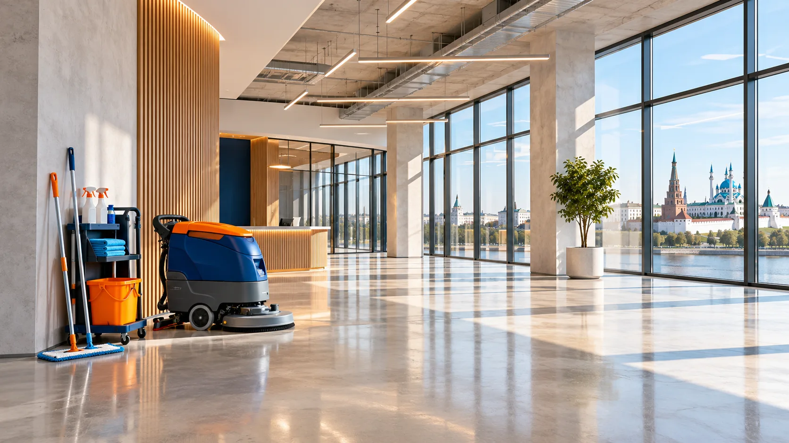

После ремонта
и строительства
Уборка помещений после завершения строительных и ремонтных работ.
Казань · уборка помещений
Уборка после строительства и ремонта, клининг офисов, мойка окон и химчистка. Обсудите с нами вашу задачу.

Выберите направление. Объём работ, сроки и стоимость можно обсудить по телефону.
Уборка помещений после завершения строительных и ремонтных работ.
Генеральная и регулярная уборка жилых помещений.
Уборка рабочих и коммерческих пространств.
Мойка окон, остекления и фасадов зданий.
Химчистка мягкой мебели и ковровых покрытий.
Услуги перечислены по карточке компании; актуальный перечень уточняйте при обращении.
Поговорим о задаче
Расскажите, какое помещение или изделие нужно почистить. При обращении можно уточнить объём работ, удобное время и стоимость.
ПозвонитьДля разговора пригодится
На связи в Казани
Обсудите задачу, подходящие услуги и стоимость со «Строй Клининг».
+7 987 294-09-09По карточке: Казань, проспект Победы, 206. Адрес уточняйте при обращении.
Карточка на Яндекс Картах ↗